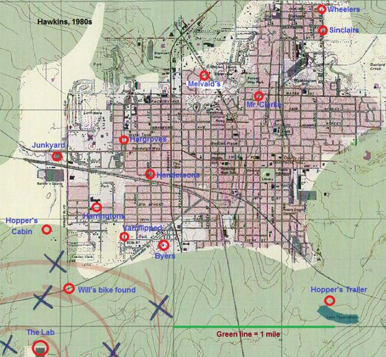
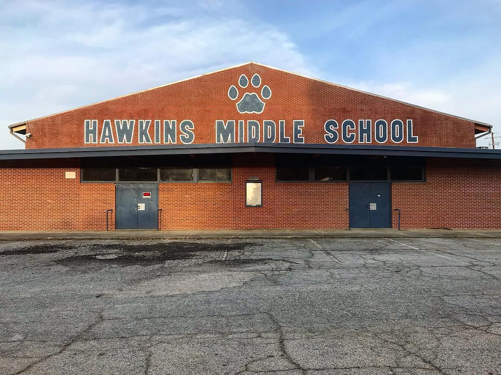
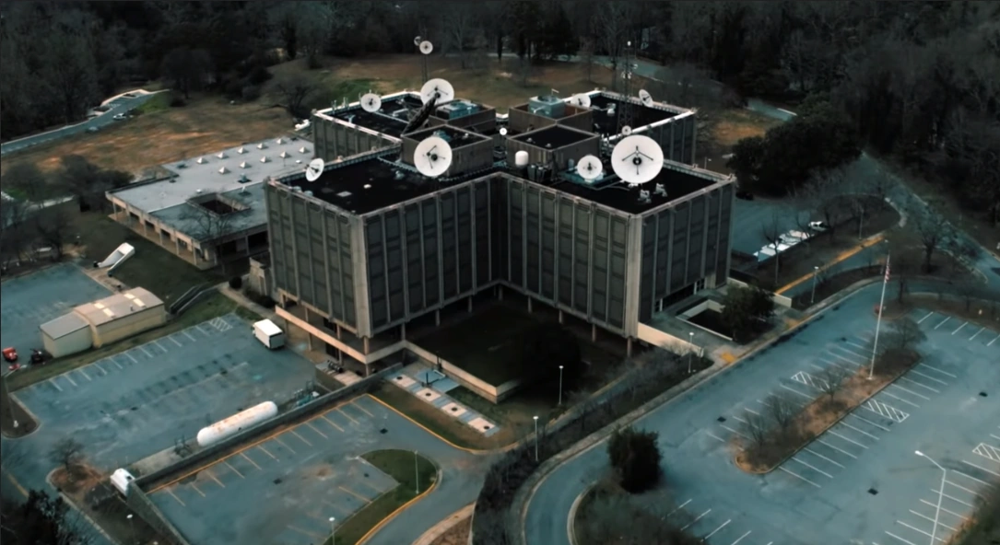
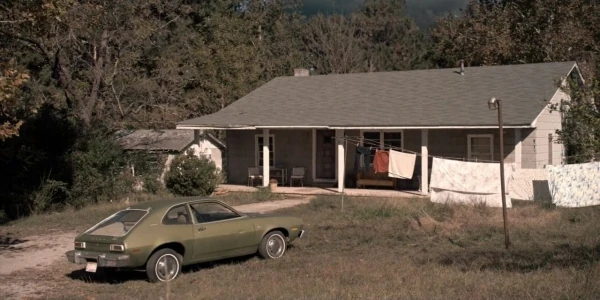

A cidade de HawkinsApesar de Hawkings ser uma cidade fictícia, ela foi inspirada em uma cidade real dos Estados Unidos chamada Atlanta, no estado da Geórgia, mais ao sul do país, e foi o local em que boa parte das filmagens do seriado ocorreram. No mapa podemos observar os principais locais da série e como foi montado o ambiente dessa incrível história. Escola de HawkingsLaboratórioCasa do Will |
|
Desenvolvido por Carolina Prado - 2023 |